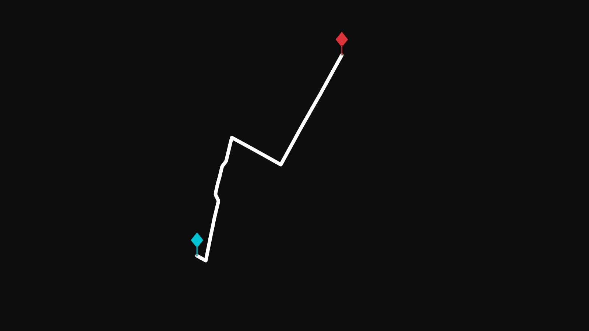
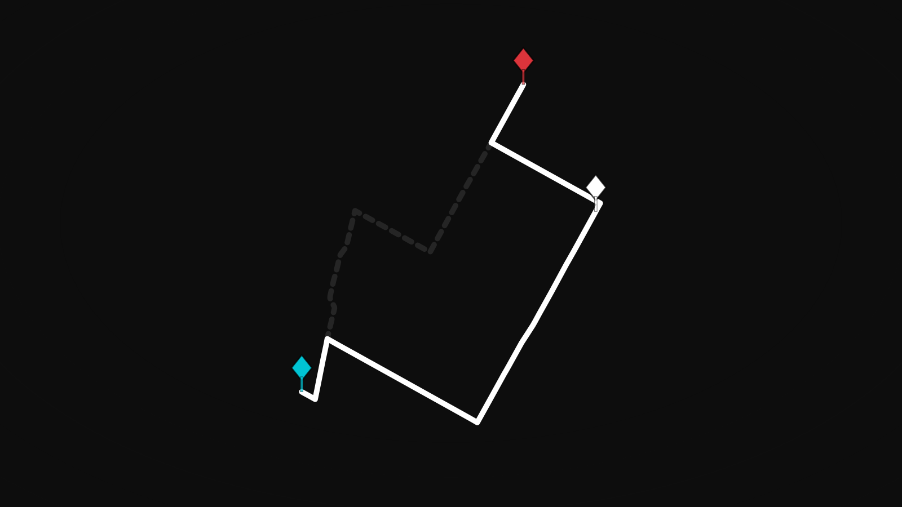
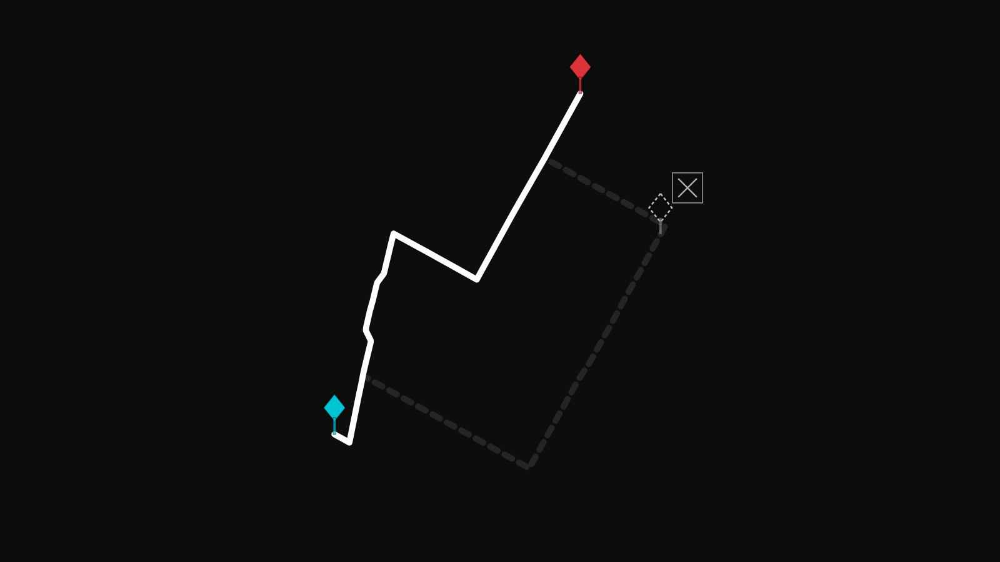
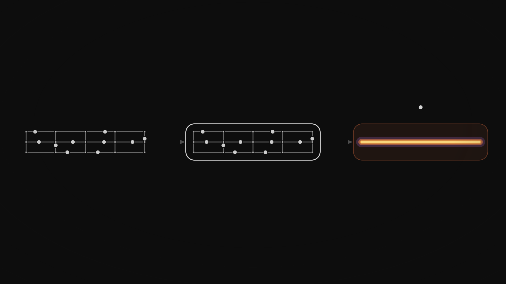
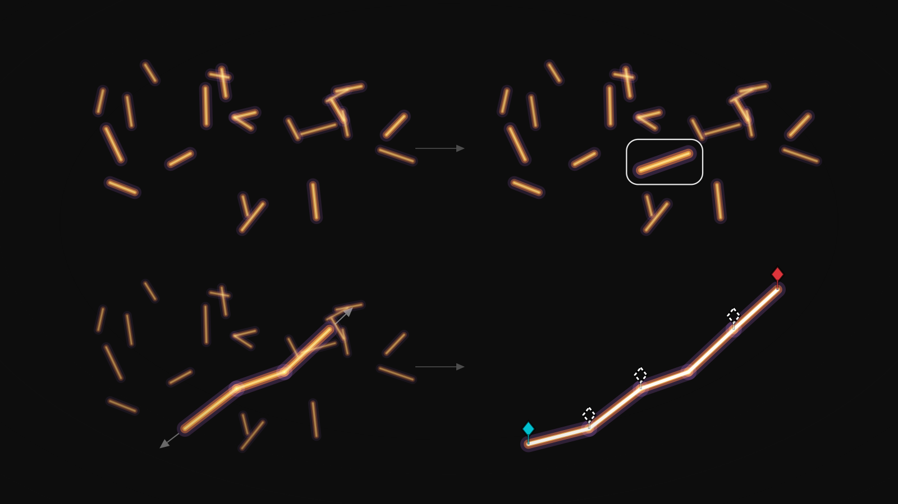
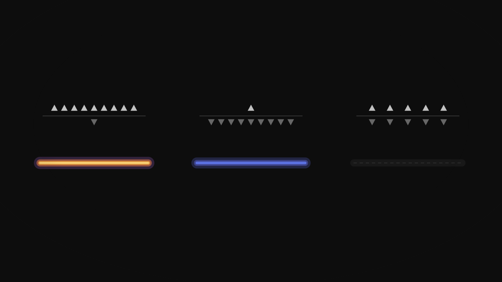
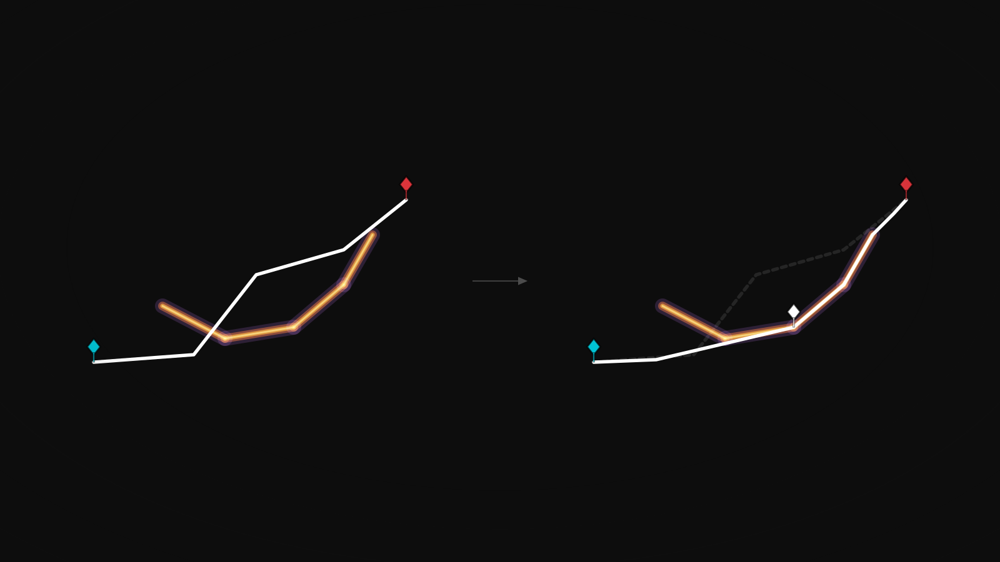

<!doctype html>
<meta charset="utf-8">
<title>City Edit — panels</title>
<style>
  @page { size: 16.667in 9.375in; margin: 0; }
  html, body { margin: 0; padding: 0; background: #0d0d0d; }
  section { width: 1600px; height: 900px; page-break-after: always; overflow: hidden; }
  section:last-child { page-break-after: auto; }
  img { display: block; width: 1600px; height: 900px; }
</style>
<section></section>
<section></section>
<section></section>
<section></section>
<section></section>
<section></section>
<section></section>
<section></section>
